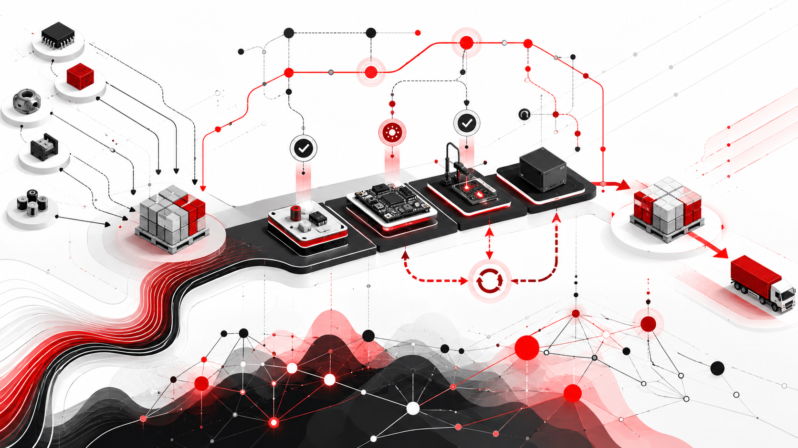

AI Adoption, Productivity, and the Missing Middle
A review of Banca d'Italia QEF 1009 on Italy's AI adoption, firm productivity, and policy architecture
Satya Nadella’s vision and the computational conditions for software on demand
Antonio Montano
October 9, 2026
October 13, 2026
Satya Nadella’s October 2026 vision of an infinite SaaS factory proposes that enterprise software will increasingly be organized around work rather than forcing work into the boundaries of predefined applications. Copilot provides an agentic interface, Microsoft IQ supplies organizational context, and reusable business capabilities remain connected to authoritative systems of record. Generative systems can then construct new interfaces, workflows, and applications without rebuilding the business foundations on which they depend.
Nadella’s 10 October follow-up, Models as Insider Risks in the Super Intelligence Era, adds a security premise: models must supply proposed intelligence without controlling the permissions, execution boundary, or evidence that govern consequential actions.
This article evaluates the combined architectural proposal as a feasibility hypothesis, not as a prediction established by progress in language models. It develops an enterprise state-transition model, defines acceptable generated applications as constrained synthesis results, and derives conditional propositions about invariant preservation, constructive synthesis, finite production capacity, portfolio coverage, and economic break-even. Counterexamples based on computability, semantic indistinguishability, concurrency, and distributed execution identify the assumptions under which the factory fails. The conclusion is that open-ended application variety is plausible over a sufficiently explicit and governed foundation, whereas unrestricted, frictionless software generation is neither computationally guaranteed nor necessarily economically superior. The analysis also examines the different consequences for SaaS producers and enterprise consumers.
A critical reconstruction of the infinite SaaS factory and a formal test of its technical and economic feasibility.
Commercial software has traditionally separated the production of functionality from its consumption. A vendor designs a relatively stable application, decides which capabilities it will contain, and makes them available to customers who purchase, configure, and sometimes extend it. Software as a service changed deployment economics, infrastructure ownership, distribution, and upgrades, but it did not abolish this division of labor: the customer still chooses from a product’s anticipated functionality or pays to adapt it. Organizational work meanwhile traverses the boundaries of those products. A single activity may require employees to reconstruct context across a CRM system, an ERP system, collaborative documents, messages, and specialized operational tools, translating their actual intentions into the sequence of operations expected by each interface.
Generative AI challenges this arrangement because software construction itself is becoming susceptible to automation. A natural-language request can initiate the production of a dashboard, integration, workflow, or executable application, while an agent can combine existing computational capabilities in ways their suppliers did not explicitly package in advance. This is a stronger proposition than attaching a chatbot to a conventional SaaS interface. Rather than treating the predefined application as the necessary starting point for an activity, it raises the possibility of treating the requirement as the starting point and assembling the appropriate software around it.
On 8 October 2026, Microsoft CEO Satya Nadella described this possibility as the infinite SaaS factory. In his account, Copilot becomes a new operating environment for work; business logic previously enclosed within applications becomes available to agents; organizational context connects intentions to relevant capabilities; and generated software executes under enterprise governance. Crucially, he does not argue that systems of record become obsolete. More agents and generated applications may increase, rather than decrease, the need for authoritative places to maintain state, coordinate changes, and enforce business rules.1
Yet the expression infinite needs careful interpretation. A system that can generate arbitrarily many syntactically different programs does not necessarily generate arbitrarily many useful capabilities, and finite computing resources cannot support unlimited production throughput. Moreover, creating a plausible application is not equivalent to establishing that it implements the intended business rule, uses authorized operations, preserves transactional integrity, or costs less over its lifetime than conventional alternatives. An enterprise application participates in a socio-technical system: its meaning depends on organizational definitions and responsibilities that may be incomplete, disputed, or absent from the information available to the generator.
The thesis examined here is consequently narrower and more testable than frictionless universal software generation. A repeatable factory for enterprise applications is feasible for a defined class of requirements if it can synthesize and accept implementations using reusable business capabilities, preserve specified invariants and policies, and remain within finite computational, organizational, and economic budgets. Whether real products satisfy those conditions is an empirical question separate from the mathematical consistency of the architecture. The analysis first reconstructs Nadella’s proposal, then defines the output of such a factory, constructs a formal model, derives feasibility results, identifies impossibility boundaries, and assesses the consequences for the two sides of the SaaS market.
Nadella’s starting point is that employees still spend substantial effort working around software: switching applications, rebuilding context, and translating desired outcomes into the particular steps each system supports. He proposes reversing the relationship so that software is increasingly assembled around the work. His phrase OS for work is not a claim that Copilot replaces the kernel or device-management functions of a conventional operating system. It describes a common environment for expressing intent, accessing organizational context, orchestrating tasks, and producing reusable functionality without requiring users to select and navigate a fixed sequence of applications.2
In this architecture Copilot is the head: a multi-model, agentic environment that receives requests, obtains context, selects tools, delegates work, and presents results. The headless layer consists of the business logic, domain operations, and authoritative data historically bundled within CRM, ERP, and other enterprise applications. The distinction does not mean that conventional screens must disappear; it means that the services beneath them become independently consumable by agents and newly constructed interfaces. A purchase-order approval workflow, for example, should not require a generated application to recreate spending authorities, document status rules, segregation of duties, or accounting transitions when those capabilities already exist in a trusted enterprise service.
Microsoft’s announcement of 25 September 2026 supplies an implementation context. The new Copilot experience distinguishes Home, combining Chat and Cowork, from Code, which generates applications and automations, and Autopilot, a persistent agent designed for delegated work. These modes have different operational meanings: answering a question produces information, Cowork can deliver a multi-step result, Code produces reusable software, and Autopilot is intended to continue activities beyond a single interaction. Their release states also differed at the announcement date: Code was scheduled for staged Frontier access and Autopilot for private preview, while Copilot Managed Runtime was described as a preview. They should not be presented as a fully deployed universal system.3
The distinction between the head and headless business capabilities explains why this is more than natural-language programming. Generating a dashboard over customer data can be relatively straightforward, but implementing the meaning of customer hierarchies, credit restrictions, contract renewals, financial approvals, and transaction histories is not. Those semantics remain essential even if the interface through which they are consumed becomes personal and generative. Nadella’s argument is that generative frontends become valuable when they can rely on shared business foundations instead of independently reproducing them, and that systems of record themselves may eventually have to be redesigned for high-volume agent access rather than predominantly human interactive sessions.
An agent cannot select a business operation appropriately simply because it knows the endpoint’s name and parameter types. It must identify what the operation means, under which conditions it is legitimate, how its arguments relate to organizational entities, and whether its results are sufficiently authoritative for the requested task. An API catalogue may expose that a function updates an invoice, but it does not necessarily explain whether an invoice is payable, which evidence is required, or whose approval is legally and operationally decisive.
Microsoft positions IQ as the context layer connecting these concerns. Work IQ concerns workplace activity and organizational context; Fabric IQ supplies entities, relationships, metrics, and semantic business definitions; Foundry IQ connects agents to governed knowledge; and Web IQ provides external information. The product description is evidence of Microsoft’s intended architecture, not proof that every material business rule has already been encoded accurately across the stack.4 For example, an agent asked to identify strategically important customers at risk of nonrenewal must interpret the terms strategically important and at risk, reconcile customer identifiers with contractual entities, and combine records that may reside in different systems. The ability to retrieve these records does not, by itself, determine the correct business analysis.
This is the critical difference between contextual retrieval and executable semantics. A semantic model may associate a database field with customer value and improve a generator’s selection of data, yet still fail to establish a precise definition of customer lifetime value or the authorization conditions under which it may trigger a business action. Microsoft has documented Dataverse semantic-model capabilities using schema relationships, metadata, views, and curated terminology, while identifying preview limitations. Such mechanisms are promising forms of semantic assistance; their completeness and authority must be established for each intended use.5
Microsoft’s 8 October Dynamics 365 announcement makes the reusable-capabilities argument concrete. The company reported 30 new CRM skills for Copilot Cowork, supported by more than 180 generally available tools across Dynamics 365 Sales, Customer Service, and Customer Insights. A tool exposes an operation or data source, including through MCP interfaces; a skill supplies task-oriented guidance for combining tools and interpreting evidence. Retrieving an opportunity is a tool invocation, whereas diagnosing why it is stalled requires a procedure for selecting and evaluating relevant commercial information.6 Microsoft’s descriptions also distinguish proposed CRM changes from committed updates: suggesting a new opportunity stage or drafting a customer response is not necessarily equivalent to persisting the stage change or sending the response.7
Code contributes a different capability by producing reusable application artifacts rather than one-off task results. Managed Runtime, in turn, addresses aspects of hosting, identity, governance, sharing, and administration so that applications generated through Copilot can run within an enterprise environment. These components attempt to bridge a gap that a code generator alone cannot close: working source code does not establish who may deploy it, which data it may access, who owns it, or how it will be maintained. Runtime governance addresses some of these obligations, although deployment controls cannot establish that every generated calculation or business decision is semantically correct.8
Figure 1 reconstructs the resulting architecture. It distinguishes the immediate invocation of existing tools from the creation of persistent applications, while keeping the systems of record outside the generator’s authority. The diagram is an analytical abstraction of the published strategy, not an internal Microsoft deployment specification.
%%{init: {"theme": "neo", "look": "handDrawn", "layout": "elk"}}%%
flowchart TB
U[Worker] -->|expresses intent| C[Copilot agentic environment]
C -->|requests context| Q(Microsoft IQ)
K[(Organizational knowledge)] -->|supplies context| Q
D[(Enterprise data and metadata)] -->|supplies semantics| Q
C -->|invokes| T[Skills and MCP tools]
C -->|requests application| G(Code generation)
G -->|produces application| H[Copilot Managed Runtime]
H -->|invokes approved tools| T
T -->|calls| B[Governed business operations]
B -->|reads or modifies| R[(Systems of record)]
R -->|provides records| D
P[Identity and governance policy] -.->|constrains| H
P -.->|constrains| B
One of Nadella’s more consequential qualifications is that the architecture should not use a language model for every operation. Models are appropriate where interpretation and synthesis add value; deterministic software may be cheaper, faster, and more reliable for routine business execution. The proposal therefore separates the probabilistic construction or orchestration of work from the deterministic or otherwise contract-governed operations that preserve authoritative enterprise state. It also admits two possible trajectories: extending existing systems of record with agentic interfaces, or reinventing those systems to meet the new workload. The second is substantially more demanding than the first, because it transfers responsibility for persistent data and business transitions, not merely for presentation and composition.9
Two days after The Infinite SaaS Factory, Nadella published Models as Insider Risks in the Super Intelligence Era (10 October 2026). The second essay is not an unrelated meditation on AI safety. It specifies the trust architecture required by the first: generative models may interpret requests, generate code, propose actions, and coordinate work, but they must not be entrusted with defining or bypassing the authority under which those actions execute. Nadella expresses the governing principle as a separation between the supply of intelligence and the authority over it.10 This strengthens the factory’s architectural hypothesis because the same models that make on-demand applications possible also enlarge the number of software actors capable of reaching sensitive enterprise services.
The insider-risk analogy concerns access and capability, not an assertion that models possess malicious intentions. An employee with legitimate access can make mistakes, misuse privileges, or be manipulated into harmful actions; a model operating with delegated credentials can create analogous consequences without any stable intention to do so. A capable model may also be vulnerable to adversarial context, faulty instructions, or compromised tools. Consequently, its apparent competence and a model provider’s assurances are insufficient grounds for authorizing consequential actions. The argument resembles the insider-risk framing developed in a June 2026 research memorandum by Pistillo and colleagues, which treats privileged AI deployment as a distinct risk requiring adapted monitoring and controls.11
Nadella’s technical proposal recalls the reference-monitor tradition and the principles of complete mediation, least privilege, and separation of privilege articulated by Saltzer and Schroeder in 1975. Complete mediation requires that every relevant access be checked against current authority, including during maintenance, recovery, and changed permissions. A useful protection mechanism also needs to resist tampering and bypass by the programs it governs.12 In a generative software factory, this implies that the model must not hold unrestricted system credentials or be able to rewrite its own approval conditions. The orchestration harness must distinguish the requested action from its authorization, use independently constrained service identities, and submit state-changing operations to a protected enforcement point. The distinction holds even when the proposed action is expressed in fluent natural language or accompanied by a plausible chain of reasoning.
The essay also separates observability from explanation. Nadella calls for independently retained, human-readable evidence of meaningful model actions, model diversity where an important outcome should not rely on one evaluator, continuous testing of adverse cases, externally administered controls, revocation and interruption mechanisms, and incident disclosure. These requirements describe a defense-in-depth architecture, but they are not all equivalent guarantees. A model-generated chain of thought may be informative yet incomplete or unfaithful to the causes of its output, and a second model’s assessment does not become independent merely because it is produced by a different prompt. Empirical research on chain-of-thought monitorability likewise finds useful but imperfect visibility that may be fragile to changes in training and inference.13 Operational reproducibility must therefore rest primarily on externally recorded inputs, model and tool versions, authorization decisions, tool invocations, committed effects, and policy changes, rather than on the model’s own account of why it acted.
Finally, containment must be interpreted in terms of effects. An authorized operator can pause new steps, cancel queued tool invocations, revoke delegated credentials, or terminate a running agent, provided those controls are outside the model’s authority and are effective under the actual failure model. Such an emergency stop cannot retroactively recall disclosed information, reverse an external payment, or undo a physical intervention that has already occurred. High-impact and irreversible operations consequently need stronger precommit authorization and transactional safeguards than ordinary read-only tasks. These distinctions make Nadella’s October 10 essay a qualification of his October 8 factory vision: an expanding space of generative applications is compatible with enterprise trust only if their expanding action space remains bounded by controls they cannot redefine.
The evidence available through 10 October 2026 supports an architectural direction, not a demonstrated universal factory. Microsoft has announced components for context, tools, skills, application generation, and governed hosting, with different maturity levels; it has not established that arbitrary business requirements can be implemented correctly at negligible cost. To examine the stronger claim, we first need a definition of what the factory produces.
The term application covers outputs with materially different obligations. An agent that summarizes overdue invoices produces an informational result, but it may not leave behind an independently deployable capability. A dashboard that refreshes the information for a team has persistent functionality and an operational identity. An application that also initiates debt-collection procedures crosses another boundary because its behavior affects authoritative business state. Counting all three as equivalent units of software production would obscure the central engineering and economic differences.
For the present analysis, a generated enterprise application is a reusable computational artifact, produced wholly or partly through automated synthesis, that implements identifiable business functionality within a defined execution environment and can be deployed, invoked, governed, and maintained independently of the generation session. It need not have its own database, graphical interface, or autonomous agent. The definition also does not imply that the application is a standalone commercial SaaS product: under NIST’s cloud terminology, a tenant-specific application produced on a managed platform may be more accurately understood as a platform-supported application than as an independent SaaS offering.14
It is necessary to distinguish generation from composition. A newly generated interface over existing ERP approval services can inherit much of the domain logic from those services, whereas a generated application introducing a new financial transaction or replacing an authoritative subsystem must establish business semantics that did not previously exist in the exposed capability library. The fact that both can be expressed as source code provides no basis for assuming equivalent feasibility. Table 1 classifies generated applications by the responsibility they assume over authoritative state and semantics.
| Class | Generated functionality | Relation to systems of record | Principal assurance burden |
|---|---|---|---|
| I. Informational | Dashboards, queries, reports, analytical interfaces | Observe existing state | Query meaning, freshness, access control, information integrity |
| II. Compositional | Task-oriented workflows and operational interfaces | Invoke existing business transitions | Sequencing, authorization, failures, concurrency, contract compatibility |
| III. Domain-extending | New entities, operations, or business rules | Extend the authoritative model | Specification, new invariants, integration, versioning, lifecycle |
| IV. System-replacing | Replacement CRM, ERP, or other authoritative subsystem | Assume ownership of existing business state | Semantic equivalence, data migration, concurrency, continuity, regulatory obligations |
These classes are not ordered by code size or user-interface complexity. A sophisticated analytics dashboard may be read-only, while a five-line endpoint that updates an accounting status can introduce consequential state-integrity obligations. The architecture described by Nadella most immediately supports Classes I and II through the composition of existing capabilities; Classes III and IV require extension or transfer of domain semantics and cannot be inferred from a demonstration of application generation over existing APIs.
A second distinction concerns identity. Syntactically different applications need not implement meaningfully different functionality: changing a dashboard’s color or variable names increases the number of generated artifacts without enlarging the space of business requirements the factory can satisfy. The relevant measure of variety is behavioral, relative to the observations that matter for a specified task, including authorization, latency, auditability, and other required properties. Two visually different applications may be equivalent for one business purpose, while nearly identical screens may conceal conflicting approval semantics.
Finally, generation must be evaluated beyond first deployment. Every persistent application introduces dependencies on data sources, domain contracts, permissions, infrastructure, and organizational rules that can change independently of its source code. A generated workflow may run successfully while silently applying an obsolete metric; a permission revision may invalidate previously accepted behavior; a shared business primitive may be modified, requiring revalidation of its consumers. The factory’s output must therefore include an operational owner, a specification, dependency information, acceptance evidence, and a lifecycle policy appropriate to the application’s risk. A low initial code-generation cost is not a low lifetime cost unless these obligations are also controlled.
The object to be synthesized is thus neither arbitrary code nor a conversational result. It is an admissible program that satisfies an accepted business specification within a defined environment and budget, accompanied by enough evidence for the intended operational use. The next step is to define those inputs and constraints mathematically.
A software factory cannot be modeled adequately as a function that maps a prompt to source code, because business correctness depends on the environment in which that code executes. A payment approval may be authorized for one principal but not another, an order may change state between inspection and action, and the same API request may yield different results depending on concurrent operations or an external service. We therefore represent the enterprise as the constrained transition system
\mathcal E=(S,S_0,X,A,T,\Gamma,P,I,O). \tag{1}
Here S is the set of enterprise states, including protected business data and relevant application state; S_0\subseteq S contains legitimate starting states; X is the set of principals, including human users, services, and delegated agents; A contains typed action instances and their arguments; and T\subseteq S\times X\times A\times S is the transition relation. A tuple (s,x,a,s')\in T means that principal x performs action a in state s and the modeled environment permits the resulting state s'. The relation is intentionally nondeterministic: concurrent updates, external services, and permitted failure outcomes need not yield a unique successor state.
The remaining components express the constraints that turn computation into enterprise behavior. The environment \Gamma contains the type system, domain entities, business meanings, operation signatures, and contracts; P:X\times S\times A\to\{0,1\} specifies whether a principal is authorized to request an action in a given state; I:S\to\{0,1\} is the conjunction of protected state invariants; and O contains observation functions through which programs may obtain permitted information. Keeping authorization separate from transition semantics is essential, since an operation may be technically implementable while remaining unauthorized for a particular actor or business condition.
A trace is a sequence \tau=s_0\xrightarrow{x_1,a_1}s_1\xrightarrow{x_2,a_2}s_2\cdots of modeled transitions. State integrity requires every state occurring in an admitted execution to satisfy the invariant:
\forall s\in\operatorname{States}(\tau),\qquad I(s)=1. \tag{2}
This is a required property, not an automatic consequence of the model. For example, an accounting invariant may require every committed payment to be associated with the proper approval and evidence. A generated application can display such a payment or initiate the corresponding operation, but it should not be able to bypass the service enforcing the invariant. We express the protected part of the enterprise through a projection \pi_{\mathrm{auth}}:S\to S_{\mathrm{auth}}. Application-local state may be managed by the generated program, while modifications of \pi_{\mathrm{auth}}(s) must occur through recognized domain operations. The distinction resembles established state-machine and program-correctness methods, including Hoare’s precondition/postcondition reasoning and Lamport’s treatment of actions, safety, and liveness.1516
A user who requests an application to identify important customers at risk has not yet supplied an executable specification. Importance may refer to revenue, future value, regulatory relevance, or contractual strategic status, while risk may refer to overdue incidents, renewal probabilities, or a formal escalation rule. An LLM may infer a plausible interpretation, but verifying the resulting code against that interpretation cannot prove that it matches the organization’s intended meaning. The factory must distinguish specification discovery from specification acceptance.
We represent an accepted requirement as
r=(u,x,\varphi,H,N), \tag{3}
where u is the original business intent, x the requesting principal, \varphi a formally interpretable behavioral specification, H the environmental and workload assumptions, and N the nonfunctional acceptance obligations. Depending on the application, \varphi can constrain query results, action sequences, authorization-sensitive behavior, and temporal conditions such as eventual completion. The assumptions H delimit permissible environmental circumstances, including initial states, concurrency, external-system behavior, and any fairness premises necessary for liveness. The conditions N address latency, throughput, availability, resource use, traceability, and other required service properties; where suitable, they may also be included in the formal trace specification.
The transition from u to \varphi is part of the production problem, not a free oracle. It may require documents, structured metadata, business-owner decisions, or policy resolution. The model assumes that \varphi has been accepted by an appropriate authority before correctness is claimed, while the factory may itself assist in drafting and validating it. Where the relevant meaning cannot be established, an explicit unresolved-specification outcome is preferable to presenting a guessed interpretation as an authoritative requirement. This assumption makes clear what formal correctness can and cannot establish: a program can be proved correct against an accepted specification without being proved correct against every intention left unstated in the original request.
Let \mathcal L_\Gamma be the language of well-typed programs constructible from the operations, observations, data types, and contracts available in \Gamma. It may include queries, deterministic transformations, bounded control flow, interface components, workflow composition, and selected state-changing operations. An implementation may ultimately be compiled into a general-purpose language, but the intermediate representation can remain more restrictive so that business effects and policy obligations are explicit. A type-and-effect discipline can conservatively describe which resources a program may read or modify; runtime enforcement remains necessary when permission depends on the current principal or state.
This constraint is central to the model’s feasibility. An unconstrained generator can emit arbitrary code, but it then inherits the difficulty of analyzing arbitrary behavior. A generator restricted to typed business primitives can inherit selected guarantees from those primitives, provided their contracts are accurate and their enforcement cannot be bypassed. Syntax-guided synthesis formalizes the general idea of searching for programs satisfying a semantic specification within a grammar that restricts candidate structure.17
For a program p, let \operatorname{Tr}_{\mathcal E,H}(p) denote the set of complete execution traces permitted by the environment under assumptions H. A trace is complete if it is maximal under the specified execution semantics, with terminated executions represented explicitly. Let \operatorname{Sat}(\varphi)=\{\tau\mid\tau\models\varphi\} denote the set of complete traces satisfying the accepted behavioral specification. Model-relative behavioral correctness is then expressed by
\operatorname{Tr}_{\mathcal E,H}(p) \subseteq \operatorname{Sat}(\varphi). \tag{4}
This inclusion is stronger than passing a finite test suite, because it quantifies over every modeled execution, including relevant concurrency and failure behavior. It also needs a non-vacuity condition: a program with no possible execution must not be treated as accomplishing the task merely because the empty set is a subset of every specification. Moreover, safety is not equivalent to progress. An application that refuses every state-changing request may preserve all invariants while never completing an approved workflow.
Finite resources are another independent requirement. Let B=(B_{\mathrm{build}},B_{\mathrm{run}}) contain production and operational budgets. The first constrains semantic work, candidate generation, analysis, approval, and deployment; the second constrains execution over a stated workload and service horizon. Write c_{\mathrm{run}}(p;\mathcal E,H,N) for the vector of operational resource and service-level measurements, normalized so that componentwise upper limits can be compared with B_{\mathrm{run}}. Let \operatorname{Auth}(p;\mathcal E,H) assert compliance with the applicable authorization and effect constraints. The feasible implementation set is then
\mathcal F(r;\mathcal E,B_{\mathrm{run}}) = \left\{ p\in\mathcal L_\Gamma : \operatorname{Feasible}(p;r,\mathcal E,B_{\mathrm{run}}) \right\}. \tag{5}
\begin{aligned} \operatorname{Feasible} (p;r,\mathcal E,B_{\mathrm{run}}) \iff {}& \operatorname{Tr}_{\mathcal E,H}(p)\neq\varnothing\\ &{}\land \operatorname{Tr}_{\mathcal E,H}(p) \subseteq\operatorname{Sat}(\varphi)\\ &{}\land \operatorname{Safe}_I(p;\mathcal E,H)\\ &{}\land \operatorname{Auth}(p;\mathcal E,H)\\ &{}\land c_{\mathrm{run}}(p;\mathcal E,H,N) \preceq B_{\mathrm{run}}. \end{aligned}
Here \operatorname{Safe}_I(p;\mathcal E,H) means that every state in every complete execution trace of p under the specified environment satisfies the invariant I. The predicate \operatorname{Feasible} combines the non-vacuity, behavioral correctness, state-integrity, authorization, and operational-resource conditions. The notation \operatorname{Sat}(\varphi) is the satisfaction set defined above.
The nonempty feasible set defines semantic and operational feasibility for an accepted requirement, but it does not yet establish that a generator can find an implementation or that the verification process is economically affordable. The distinction is not pedantic: existence, discoverability, decidability, and competitive production cost are different questions. Their separation prevents a purely mathematical definition of success from being mistaken for an engineering demonstration.
The feasible-set definition depends on six premises, summarized in Table 2. They are structural assumptions that a real factory would have to establish, not empirical findings about any vendor’s current products.
| Hypothesis | Necessary condition | Consequence if it fails |
|---|---|---|
| H1 — State authority | All relevant protected mutations pass through the modeled control boundary | Invariants can be bypassed through alternative integrations or credentials |
| H2 — Semantic adequacy | Business concepts and acceptance rules are sufficiently precise and authoritative | The program can be correct for the wrong interpretation |
| H3 — Contract enforcement | Domain operations actually enforce the guarantees exposed to callers | Composition cannot inherit the claimed primitive-level properties |
| H4 — Expressiveness | The admissible language can express an economically useful class of requirements | Required functionality may lie outside the feasible program space |
| H5 — Effective assurance | Sufficient acceptance evidence can be obtained within the production budget | Existing correct programs may remain unapprovable, or invalid ones be accepted |
| H6 — Resource feasibility | Build, runtime, integration, and lifecycle costs remain within relevant limits | Correct implementations are operationally or economically unusable |
The procurement example captures why all six are needed. A generated application that displays orders awaiting approval and invokes an ERP approval API may be a feasible composition when the relevant terms are defined, authority is delegated correctly, and the backend atomically enforces the order’s current state. If the requirement instead introduces a previously nonexistent approval category, the factory cannot simply assume the existing contracts are sufficient: \Gamma and potentially the allowed transitions and invariants must change. The application has crossed from composition into domain engineering, regardless of how little code the new interface requires.
The October 10 essay makes a previously implicit part of H1 and H3 explicit: a policy predicate in the mathematical model is not equivalent to a mechanism enforcing that predicate. The existing function P(x,s,a) specifies whether principal x is authorized to request action a in state s, but a generator can observe this rule, misunderstand it, or deliberately propose an action violating it. A separate reference monitor M:X\times S\times A\to\{0,1\} must mediate each protected invocation, and its effective authorization must be sound with respect to the accepted policy: M(x,s,a)=1 implies P(x,s,a)=1. Here M is an execution mechanism administered independently of the model, not another model’s textual opinion about whether the action seems legitimate.
For protected state changes, define the monitored transition relation by
T_M=\{(s,x,a,s')\in T\mid M(x,s,a)=1\}. \tag{6}
This restriction has a useful but strictly conditional consequence. If every protected transition actually passes through M, the monitor cannot be bypassed or modified by generated code, and every transition in T_M preserves I, then the invariant-preservation proof in Proposition 1 applies regardless of the probability distribution governing the model’s proposed actions. The monitor’s existence alone is insufficient: its implementation must faithfully enforce policy, its action semantics must correspond to the protected state transitions, and the trusted computing base—including tool wrappers, delegated identities, connectors, and administrative interfaces—must be in scope. A compromised monitor, stale authorization, or uncontrolled secondary endpoint invalidates the conclusion.
Evidence is a separate output of this enforcement boundary. The system should associate consequential invocations with a protected audit event identifying the initiating human or service principal, delegated agent, application version, invoked capability, effective policy decision, execution outcome, and resulting transaction reference. A tamper-evident append-only audit store administered independently of the model can support investigation and reconstruction of observable execution; it cannot establish that the generated business specification was correct or recover an inaccessible internal causal explanation of the model. This distinction prevents auditability, explainability, and mathematical verification from being treated as synonyms.
An effective factory is not merely a map from requirements to possible code; it is a production procedure that can either return an accepted application or explain why it cannot produce one within its budget. The first stage constructs and obtains acceptance of r, using organizational context to locate candidate definitions, business rules, data relationships, and relevant operations. The second stage produces a typed intermediate representation over \mathcal L_\Gamma, explicitly distinguishing queries, local computations, effects on authoritative state, and the identities under which operations will execute. Only after these constraints are represented does the factory need to compile the result into application-specific source code and presentation components.
A generative model can participate in the candidate search without becoming the authority over acceptance. Let K_t be the versioned library of reusable templates, contracts, and approved composition patterns at production time t; let D_j contain accumulated constraints and confirmed counterexamples after j attempts. The candidate generator \mathsf G proposes
p_j\sim\mathsf G(\,\cdot\mid r,\Gamma,K_t,D_j). \tag{7}
The probabilistic notation accommodates LLM-based proposal mechanisms but supplies no correctness guarantee. Conditioning on business contracts and earlier failures may raise the likelihood of finding a useful candidate; it cannot establish that the candidate implements the accepted specification. The appropriate architecture pairs generation with a separate validator, potentially incorporating type checking, contract analysis, testing, symbolic execution, model checking, static analysis, and authorized review. Counterexample-guided inductive synthesis provides a useful precedent: a candidate is proposed, checked, and refined after a confirmed violation rather than presumed correct on its first appearance.1819
The validator \mathsf V should distinguish a certified property from a confirmed counterexample and from an unresolved conclusion:
\mathsf V(p_j,r,\mathcal E)\in \{\operatorname{Certified}(\eta_j),\operatorname{Refuted}(z_j),\operatorname{Undetermined}\}. \tag{8}
The evidence \eta_j has a stated scope: a type checker may establish type safety, a model checker may establish an invariant on a finite abstraction, and a test suite may provide evidence for exercised cases. These are not interchangeable claims. Sound abstract interpretation may rule out certain behaviors through conservative approximation but can also yield false alarms; proof-carrying code illustrates how an untrusted producer can supply evidence checked by a smaller mechanism, without implying that arbitrary business specifications can be derived automatically.2021 A model’s expressed confidence or another model’s agreement must not silently be promoted to a formal proof.
Figure 2 illustrates the distinction between proposing, checking, and deploying. Inconclusive assurance is an explicit outcome, not a reason to bypass acceptance or to describe the last candidate as correct. Rejected candidates can refine the search when the finding is genuine; unresolved semantic questions return to an authorized specification process; approved candidates proceed through packaging and governed runtime deployment.
%%{init: {"theme": "neo", "look": "handDrawn", "layout": "elk"}}%%
flowchart TB
U[Business requester] -->|states intent| S(Specification acceptance)
K[(Semantic contracts and reusable patterns)] -->|grounds| S
S -->|provides accepted requirement| G(Candidate synthesis)
K -->|supplies primitives| G
G -->|produces program| V{Validation result}
V -->|confirmed violation| R(Counterexample analysis)
R -->|adds constraints| G
V -->|inconclusive| H(Review and clarification)
H -->|revises specification| S
H -->|cannot approve| Z[No deployment]
V -->|certified for stated obligations| P(Package and deploy)
P -->|publishes| A[Managed application]
A -->|invokes approved operation| B[Business service]
B -->|reads or modifies| D[(Authoritative state)]
T[Governance and identity policy] -.->|constrains| V
T -.->|constrains| A
T -.->|constrains| B
Because generation may require several rejected candidates, its cost cannot be evaluated from the successful final response alone. For a successful production run examining m candidates, let C_{\mathrm{spec}} denote specification work, C_{\mathrm{gen},j} and C_{\mathrm{val},j} the costs of generating and checking candidate j, C_{\mathrm{rev},j} its required human review, and C_{\mathrm{pkg}} and C_{\mathrm{dep}} the packaging and deployment costs. In a common monetary unit,
C_{\mathrm{build}}=C_{\mathrm{spec}} +\sum_{j=1}^{m}(C_{\mathrm{gen},j}+C_{\mathrm{val},j}+C_{\mathrm{rev},j}) +C_{\mathrm{pkg}}+C_{\mathrm{dep}}. \tag{9}
This equation identifies why lower token expenditure need not imply lower software-production cost. A weak semantic model increases clarification and review; unreliable candidates increase m; assurance-intensive workloads increase validation effort. By contrast, stable reusable operations can reduce all three burdens by making correct compositions easier to propose and easier to check. Production budgets must also track engineering time, computational resources, and elapsed delivery time rather than treating every constraint as monetary.
A successful factory should produce an operational artifact, not simply an executable file. Let \alpha_{\mathrm{app}}=(p,\rho,\delta,\eta,\ell) contain the implementation p, versioned accepted specification \rho, dependency manifest \delta, acceptance evidence \eta, and lifecycle record \ell, including ownership, deployment identity, monitoring and retirement obligations. This formulation allows the organization to identify which applications relied on an earlier domain contract when that contract changes. It also distinguishes passing an initial test from remaining acceptable after upstream schema, security-policy, or business-rule revisions. Established secure development guidance, such as NIST’s Secure Software Development Framework, reinforces the need to treat provenance, dependencies, change control, and remediation as lifecycle obligations rather than optional activities after code generation.22
Predeployment validation cannot replace runtime enforcement. Permissions can be revoked, concurrent actions can change state, and an external service can fail after the application observes its preconditions. The authoritative service must evaluate permissions and invariant-preserving transitions against current state rather than trusting a generated client’s earlier check. Identity delegation, rate limits, quotas, logging, and restriction of network effects therefore form part of the trusted execution boundary. These controls limit what a fallible generated application can accomplish, but they do not prove that its calculations or recommendations express the correct business meaning.
The factory’s reusable library may expand as accepted applications yield common templates, discovered integration patterns, and confirmed failure cases. Yet engineering feedback must remain separate from semantic governance. A ranking rule repeated in several generated maintenance applications is not thereby an approved maintenance policy; promoting it into a shared domain operation requires authoritative acceptance. Otherwise, the factory may become progressively more efficient at reproducing the same error, especially when generated outputs are fed back into future context.
We can now model the factory as a bounded procedure whose outputs are deployable artifacts or explicit non-deployment outcomes:
\mathsf{Factory}_{K_t,\mathcal E,B_{\mathrm{build}}}: \mathcal R \longrightarrow \mathcal A_{\mathrm{app}}\cup\mathcal Z. \tag{10}
For a fixed enterprise environment \mathcal E, production budget B_{\mathrm{build}}, and reusable library K_t, the factory maps each accepted requirement r\in\mathcal R to either a deployable application artifact in \mathcal A_{\mathrm{app}} or an explicit non-deployment outcome in \mathcal Z. For a randomized factory, this mapping describes the possible output of a single execution; repeated executions induce a probability distribution over the output space. For a randomized procedure, let q(r) be the probability of returning an accepted artifact for requirement r. Given a representative requirement distribution D, expected coverage is Q_D=\mathbb E_{r\sim D}[q(r)]. These measures must be stratified by application class and risk: a high success rate on simple read-only dashboards cannot establish comparable performance for financial transactions. If acceptance evidence is incomplete, the observed q(r) measures passage through the stated acceptance procedure, not necessarily actual semantic correctness.
The factory’s central obligations are therefore constructive reachability (does its permitted language contain a valid implementation?), assured discoverability (can it find and validate that implementation within finite resources?), and economic sustainability (does accepted functionality cost less, or deliver enough additional value, over its service life?). These obligations are independent. The next section derives conditional results for each rather than assuming that progress on one automatically solves the others.
The model supports conditional results, not a universal proof that any enterprise application can be generated. In each proposition the distinction between a formal conclusion and its applicability to a real platform is essential: a theorem may hold exactly under its assumptions even when those assumptions have not been measured or established in Microsoft’s deployment. The propositions also answer different questions. Invariant preservation is a property of the trusted execution boundary; constructive synthesis concerns the search and acceptance procedure; and economic viability concerns the full cost of obtaining functionality over a specified planning horizon.
Suppose every admitted initial state satisfies I, every permitted state-changing transition from an invariant-satisfying state produces another such state, and generated applications cannot modify protected state outside those transitions. Assume also that the modeled execution boundary includes relevant concurrent actors and external changes. Under these conditions, any admitted generated program preserves I throughout every reachable execution:
\forall p\in\mathcal L_\Gamma^{\mathrm{admitted}},\quad \forall s\in\operatorname{Reach}(\mathcal E,p),\qquad I(s)=1. \tag{11}
Proof. The invariant holds initially by assumption. If it holds at a reachable state, the transition-preservation assumption makes it hold at every permitted successor. Because the model includes all relevant mutation paths, an application cannot reach a protected state by an unmodeled bypass. Induction establishes the property for every finite execution prefix and therefore for every state encountered in an infinite execution. \square
The result is elementary, but its implications are strong. A generated application can issue an inappropriate approval request while the authoritative ERP operation safely rejects it; the model’s unreliability need not corrupt protected state. The guarantee belongs to the domain service’s enforcement contract and the independently protected reference monitor, not to the generator’s ability to anticipate every situation. The monitor restricts which proposed operations can execute; it does not certify the quality of the model’s intentions, explanations, or chosen business objectives. Its limit is equally important: safety is not task correctness. An application may preserve every protected invariant while displaying the wrong metric, failing to approve a legitimate request, or acting on a permissible but inappropriate order. Nor does the proof survive an alternative endpoint, overly privileged service identity, or concurrency path that bypasses the promised invariant-preserving operation.
Let \mathcal P_{r,L}\subseteq\mathcal L_\Gamma be a finite, effectively enumerable set of candidates under a computable complexity bound L. Assume membership in the feasible implementation set \mathcal F(r;\mathcal E,B_{\mathrm{run}}) is decidable for each candidate under the chosen execution model, and the production budget is sufficient to evaluate them all and deploy an accepted result. Then an effective algorithm can terminate with a feasible implementation if and only if
\mathcal P_{r,L}\cap\mathcal F(r;\mathcal E,B_{\mathrm{run}})\neq\varnothing. \tag{12}
Proof. Enumerate the finite candidate space and apply the assumed terminating membership decision procedure to each program. If a member of the intersection exists, the algorithm eventually examines and accepts it; otherwise, after testing every candidate, it terminates with a negative result relative to that bounded space. Finiteness and decidability guarantee termination, while the resource premise guarantees that the process fits the specified production budget. \square
This is constructive feasibility, not practical efficiency. If a grammar admits q>1 alternatives at each of up to L construction positions, a simple unconstrained enumeration may examine as many as \sum_{\ell=0}^{L}q^\ell=(q^{L+1}-1)/(q-1) sequences before type and semantic restrictions are applied. More capable candidate ranking can reduce expected search effort, but it cannot inherit the completeness guarantee of exhaustive enumeration unless an equivalent complete fallback is retained. For independent attempts with constant per-attempt probability q_r>0 of producing a truly acceptable candidate, the probability of success within k attempts is 1-(1-q_r)^k, with expected waiting time 1/q_r attempts absent a cap. These formulas describe assumptions to be tested, not observed properties of current LLM-based factories; successive candidates refined through feedback are rarely independent or identically distributed.
A finite alphabet of business primitives may generate infinitely many syntactically different compositions when unbounded program length is allowed. This does not guarantee infinitely many meaningful business applications, because distinct programs may be observationally equivalent for the specified requirements. Genuine unbounded behavioral variety requires infinitely many equivalence classes under an observation relation that distinguishes relevant authorized outcomes, rather than merely counting variants of source text or interface styling.
Even when such variety exists, a finite production budget imposes a hard throughput constraint. Let B be the total available production resource for a period, F a fixed overhead, and c_{\min}>0 a lower bound on the resource consumed by each accepted application. Then
N_{\max}\leq\left\lfloor\frac{B-F}{c_{\min}}\right\rfloor, \qquad B\geq F. \tag{13}
Proof. Producing N accepted applications consumes at least F+Nc_{\min}. Since this cannot exceed B, rearrangement yields the bound. \square The defensible interpretation of infinite, therefore, is that an organization need not remain limited to the fixed catalogue of applications anticipated by a supplier. Its space of possible software can expand through composition while actual acceptance, operation, and maintenance remain constrained by finite resources.
A comparison between generative and conventional software must hold the accepted functionality, risk obligations, service horizon, and accounting boundary constant. Consider first N sufficiently similar applications with common average lifetime costs. Let conventional production cost F_C+Nc_C, where F_C is shared fixed expenditure and c_C the average cost per accepted application, including procurement or development, customization, integration, assurance, operation, and maintenance. Let the factory cost F_F+Nc_F+E(N), where F_F is the factory’s total shared fixed cost, including semantic infrastructure, generation capabilities, and governed execution services; c_F=c_S+c_G+c_V+c_O includes average specification, successful-run generation with preceding rejected attempts, validation, and lifetime operation; and E(N) captures portfolio-level coordination or exception costs not already included elsewhere. Define \Delta F=F_F-F_C and \Delta c=c_C-c_F. Proposition 4 states that the factory is cheaper if and only if
\boxed{N\Delta c>\Delta F+E(N).} \tag{14}
Proof. Subtract the factory’s lifetime cost from conventional lifetime cost. The difference is N\Delta c-\Delta F-E(N), which is positive exactly under the stated condition. \square If E(N)=0, \Delta F>0, and \Delta c>0, the familiar scale threshold is N>\Delta F/\Delta c. But it is precisely the assumption of negligible coordination cost that a large enterprise application portfolio needs to test.
A stylized interaction model makes the risk visible. Let E(N)=\varepsilon N+\beta N(N-1)/2, with \varepsilon\geq0 an average exception cost and \beta\geq0 an average cost per pairwise dependency. This is a scenario, not a proposed empirical law: actual systems generally have sparse and heterogeneous dependency graphs. Substitution gives N(\Delta c-\varepsilon)>\Delta F+\beta N(N-1)/2. When \beta=0, sufficiently high application volume can amortize fixed investment; when \beta remains positive at growing scale, quadratic coordination costs eventually outweigh linear savings. This is why stable modular boundaries, information hiding, and reusable semantic contracts are economic infrastructure rather than cosmetic architectural choices.2324
An illustrative three-year experiment sets F_C=€100{,}000, c_C=€80{,}000, F_F=€400{,}000, c_F=€35{,}000, \varepsilon=€5{,}000, and \beta=€500. These values are hypothetical and should not be attributed to any actual SaaS vendor. The conventional total is €100{,}000+€80{,}000N, while the factory total is €400{,}000+€40{,}000N+€250N(N-1). Table 3 gives the resulting comparisons, including the corrected values for 20 and 50 applications.
| Accepted applications | Conventional lifetime cost | Factory lifetime cost | Saving from factory |
|---|---|---|---|
| 5 | €500,000 | €605,000 | −€105,000 |
| 8 | €740,000 | €734,000 | +€6,000 |
| 20 | €1,700,000 | €1,295,000 | +€405,000 |
| 50 | €4,100,000 | €3,012,500 | +€1,087,500 |
| 160 | €12,900,000 | €13,160,000 | −€260,000 |
The scenario first shows fixed investment being recovered through reuse and then shows a loss of advantage when the assumed coordination term becomes sufficiently large. Neither pattern is inevitable: a well-factored capability layer could make interaction costs substantially smaller, while dense dependencies could make them larger. The purpose of the example is to identify measurements that would determine the result, not to forecast market prices.
The homogeneous model also assumes that the factory can satisfy every required application, which is implausible across all four generation classes. Let \alpha\in[0,1] be the share of a representative portfolio for which the factory can produce an accepted implementation within its budgets; let c_{\mathrm{fail}} be the additional cost spent on an unsuccessful generative attempt before fallback to conventional production. Assuming otherwise comparable per-application costs, Proposition 5 establishes the hybrid advantage condition
\boxed{\alpha N(c_C-c_F)> \Delta F+E(N)+(1-\alpha)Nc_{\mathrm{fail}}.} \tag{15}
The inequality follows by comparing F_F+\alpha Nc_F+(1-\alpha)N(c_C+c_{\mathrm{fail}})+E(N) with F_C+Nc_C. It shows why a factory can be valuable without serving every requirement, but also why evaluations must count failed attempts and classify the distribution of actual business needs. A high success rate on informational applications cannot be extrapolated to a portfolio dominated by transactional extensions.
Finally, lower lifetime cost does not automatically make every new application worth building. Let V_i(p) be the incremental business value of accepted application i under a defined counterfactual baseline, and let C_{\mathrm{portfolio}} be the attributable portfolio cost. The enterprise should select admissible implementations to maximize \sum_i V_i(p_i)-C_{\mathrm{portfolio}} while preserving the hard functional, authorization, safety, and resource constraints. More generated applications can expand the feasible opportunity set; they are not themselves the objective. The full result is a conditional economic case for accepted business functionality per unit of lifetime cost, not a claim that tokens, lines of generated code, or raw deployment counts measure productivity.
The preceding results are conditional, and those conditions are not accidental technical details. Some failures arise from the limits of computability; others from the impossibility of inferring rules absent from available evidence; still others from enterprise architecture, concurrency, security, and economics. Conflating them would either overstate the promise of generative AI or dismiss feasible constrained systems merely because unrestricted program synthesis is impossible. The useful approach is to remove one hypothesis at a time and identify which guarantee is lost.
Consider a factory generating unrestricted Turing-complete programs and a verifier required to decide, for every program, whether its execution could ever invoke a forbidden operation. Proposition 6 states that no total computable verifier can make this decision correctly for every such program. To prove it, take an arbitrary Turing machine M and input w, construct a program that simulates M(w), and have it invoke the forbidden operation if and only if the simulation halts. A universal verifier for forbidden-operation reachability would decide whether M halts, contradicting the halting problem. This is a direct reduction from classical computability theory and agrees with the broader limitation on nontrivial semantic properties expressed by Rice’s theorem.2526
The result does not mean that the enterprise cannot prevent the operation from succeeding. A runtime reference monitor can reject every forbidden invocation if all relevant effects pass through it. The computationally impossible demand is a general, always-terminating static decision about arbitrary program behavior; the tractable alternative is constraining the effects the executing program can actually exercise. This distinction reinforces Proposition 1 and explains why a governed business layer is more than a convenience. It also defines its failure boundary: if a generated application can bypass the reference monitor through ungoverned credentials, direct database modification, or an undocumented integration, runtime controls no longer provide the claimed protection.
Even an unlimited computational budget does not recover authoritative business rules from evidence that fails to distinguish them. Imagine two enterprises with identical accessible order records, schemas, and payment APIs, but different legitimate policies concerning when a particular invoice may be paid. In one, goods-receipt evidence is compulsory; in the other, a contractual exception permits payment without it. If the exception is absent from all information available to the generator, no algorithm can identify the correct policy in both organizations from those observations alone.
Proposition 7 — Semantic non-identifiability. If two enterprise environments provide identical responses to every information-gathering action available to the factory but have disjoint acceptable implementation sets for the same expressed requirement, no procedure using only those observations can guarantee a correct result in both. A deterministic procedure receives the same evidence and therefore makes the same choice, which cannot belong to both disjoint sets. A randomized procedure produces the same output distribution in both environments; if q_1 and q_2 are its probabilities of choosing acceptable implementations in the respective environments, their disjointness implies
q_1+q_2\leq1. \tag{16}
Consequently, at least one environment has success probability no greater than one half. This is a counterexample to guaranteed correctness under incomplete semantics, not an assertion that every enterprise request is ambiguous. The factory may resolve an actual ambiguity through additional documents, new observations, or an authorized business-owner decision. What it cannot do is infer an authoritative distinction from information that contains none. H2 must be satisfied through genuine semantic access and acceptance, not presumed to follow from better language-model reasoning.
A different failure appears when all business rules are documented but the composition violates concurrency assumptions. Suppose two generated applications each read €100 of remaining budget and then request an €80 expenditure. If the backend accepts the debit without atomically checking the remaining balance, both applications may commit their requests and exceed the authorization limit. Their local calculations may be individually correct against the observed state, yet the shared result violates the invariant that committed expenditure cannot exceed the authorized budget. The problem is the check-then-act race, not the use of generative AI.
A state-changing domain operation that atomically checks its preconditions can protect this invariant, whereas client-side validation of a previously observed value cannot. Real cross-system workflows are harder still: reserving inventory, initiating payment, arranging shipment, and recording fulfillment may involve separately committed transactions. Saga-style compensation can address some partially completed sequences, but a compensating operation is not equivalent to a globally atomic rollback; a dispatched shipment or leaked document may be impossible to undo completely.2728
A useful operation contract therefore specifies more than argument types and a description of the result. It needs the preconditions, effects, postconditions, error behavior, authorization context, and applicable concurrency or compensation semantics on which clients rely. Otherwise, an application may combine syntactically valid operations whose guarantees are incompatible. This is the limits-of-composition counterpart of the headless promise: exposing more endpoints creates flexibility only when the contracts permit safe use together.
A context layer introduces a trust-boundary problem of its own. Retrieved documents, customer records, search results, and third-party content may be useful evidence for specification construction while remaining untrusted as instructions. Indirect prompt-injection research has demonstrated how adversarial text embedded in lower-trust material can redirect LLM-integrated applications and their tool use.29 In a software factory, contaminated context can influence not only an immediate answer but the requirements, dependencies, or code of a persistent application. A malicious supplier document that induces the generator to add an unauthorized data-export endpoint illustrates why validating a program against a contaminated specification does not establish that the specification was legitimately accepted. Retrieved evidence must not acquire authority merely by entering a model’s context window.
Nadella’s October 10 insider-risk argument adds another failure mode: if the model, orchestration harness, policy evaluator, and audit mechanism are administered through the same unconstrained execution identity, their apparent separation provides no meaningful independence. A model-generated assurance report is not a substitute for independently captured tool events, and logging a forbidden action after it has committed is not the same as preventing it. Practical containment must include pre-execution policy enforcement, protected evidence, and an effective way to stop future activity, with explicit recognition that previously committed or irreversible effects may remain.30
The problem persists after initial acceptance. A contract may change without a corresponding change in its API signature; an organization may revise an approval hierarchy while preserving familiar role names; a reporting field may acquire a different business interpretation after a restructuring. An application’s previous proof or test result remains conditional on the versions and assumptions against which it was accepted. Versioned semantic contracts, dependency manifests, selective revalidation, and accountable authorization of domain changes are thus requirements for lifecycle feasibility, not documentation niceties. Shared components reduce duplicated work but can also concentrate common-mode failures when a widely reused contract is wrong.
The agentic architecture changes the operating load on systems of record because continuously executing software can invoke the same operation far more frequently than human users navigating a graphical interface. For n active agents, an average task initiation rate r per agent, and an average k calls to a particular backend per task, the mean arrival rate is \lambda=nrk. If that backend sustainably processes \mu requests per second, a necessary condition for a stable long-run backlog in the simplest queueing model is \lambda<\mu. Even that inequality does not guarantee acceptable latency: correlated bursts, retries, variable service times, and downstream bottlenecks can degrade performance at lower mean utilization.
For illustration, 4,000 agents each initiating one task every two minutes, with three calls to the same backend per task, generate an average 100 requests per second. A system designed for human interactive traffic may not sustain that workload without batching, rate controls, architectural changes, or additional capacity. More capable generation does not remove these operating limits; it can make them binding sooner. The factory’s runtime budget must therefore account for inference, context retrieval, API volume, audit events, concurrent transactions, and recovery behavior across the whole application portfolio, not just individual demonstrations.
The counterexamples map back to the six hypotheses of the model. H1 and H3 fail when protected operations can be bypassed or their contracts are too weak for composition. H2 fails when required business meaning cannot be observed or accepted. H4 fails when the admissible language cannot express the requested capability. H5 fails when the required universal claim is undecidable or the available evidence is insufficient. H6 fails when verification, dependencies, agent traffic, or ongoing maintenance exceed the applicable budget. These are distinct failure mechanisms, and a vendor must specify which properties its system actually enforces rather than treating application generation, runtime governance, and semantic correctness as interchangeable accomplishments.
The practical feasibility frontier is therefore a design choice. Restricting generation to read-only analytics permits stronger containment; permitting governed transactional composition expands usefulness while demanding enforceable contracts; extending or replacing business systems requires specification and assurance of new authoritative state transitions. There is no single model benchmark that establishes progress along every one of these dimensions.
The theoretical analysis identifies a redistribution of software-production work, but technology alone cannot determine who captures its economic value. Reducing the implementation cost of an interface may improve a vendor’s margin, lower prices, enable new suppliers, expand customization demand, or increase the importance of the platform controlling authoritative business semantics. Teece’s analysis of complementary assets provides an economic precedent: returns from an innovation may accrue to owners of assets needed to commercialize it, rather than solely to the innovator who made one activity cheaper.31
SaaS vendors traditionally amortize the cost of engineering shared functionality across many customers, combining data models, business logic, interfaces, integrations, infrastructure, and support within a product. Generative AI can reduce the cost of some implementation, testing, documentation, and customization tasks, but the measured effect varies with the task and with how completion is defined. Brynjolfsson, Li, and Raymond reported productivity improvements in a customer-support deployment, particularly for less experienced workers; their findings do not quantify enterprise software-development savings. METR’s 2025 randomized study found that experienced open-source developers took about 19% longer on selected familiar-codebase tasks when using the tested early-2025 AI tools, while its February 2026 follow-up discussed evidence consistent with later improvements but warned that selection effects prevented a reliable contemporary estimate. The appropriate inference is heterogeneity and the need for controlled measurement, not a fixed productivity multiplier.323334
An incumbent’s defensibility will consequently depend less on the mere quantity of predefined screens and more on what remains difficult to replicate. A generic interface over standard records may become inexpensive for a customer or rival to recreate, whereas domain contracts, regulated transaction logic, accumulated enterprise configuration, specialized integrations, reliable service operation, and established commercial relationships remain complementary assets. Some application-specific code can become commoditized while the authoritative platform on which generated software relies becomes more valuable. The opposite can also occur: an independent agentic front end may capture the user relationship while routing work to a legacy supplier’s headless services, reducing that supplier’s control over discovery and experience.
This architectural direction extends beyond Microsoft. SAP announced an expanded Joule Studio in May 2026 for constructing agents, applications, and workflows grounded in business processes and semantic context; Oracle’s March 2026 AI Agent Studio announcement included an agentic applications builder, workflow orchestration, contextual memory, and governance; ServiceNow announced Build Agent availability and additional controls for software and agents; Salesforce has commercialized Agentforce as an agent platform connected to CRM workflows. These are supplier statements of product direction and availability, not evidence that their respective tools satisfy the full mathematical conditions derived here. Their common strategic feature is the attempt to make existing enterprise capabilities consumable through new agentic and generative arrangements.35363738
A vendor’s product backlog may accordingly shift from asking only which additional screens to implement toward asking which domain primitives can be exposed with stable contracts, which business meanings can be shared, and which generated compositions can be governed without multiplying lifecycle work. This is not a guarantee of stronger incumbency: open interfaces may enable complementary businesses and competition, while proprietary semantic definitions, metering systems, or runtime dependencies can increase switching costs. The resulting market structure depends on the actual portability of business contracts and the ability to substitute one provider’s capabilities for another’s.
Seat-based SaaS licensing approximates the number of humans using a product, but one person may delegate hundreds of activities to agents consuming varying amounts of inference, context retrieval, and backend operations. A vendor charging only per human seat can therefore face highly variable costs to serve, while one charging per tool invocation may create uncertain budgets and weak alignment with delivered business value. Microsoft’s September 2026 announcement explicitly distinguished subscription-based everyday interactions from usage-based longer-running agentic work; Salesforce’s Agentforce pricing includes metered action or credit structures alongside other licensing options. Those facts illustrate a move toward hybrid monetization, not proof that outcome-based pricing has become the dominant arrangement.3940
An action, however, is not an outcome. A support agent can invoke several tools without resolving a case; a procurement workflow can consume tokens and API calls before discovering that no permissible transaction exists. Outcome-based contracts would require agreed definitions, attribution rules, and responsibility for partial failures. A meaningful consumer-side measurement is the cost per accepted business result, with unauthorized or materially incorrect executions excluded from success. For an evaluation period T, define
\operatorname{CostPerAcceptedOutcome}(T)= \frac{C_{\mathrm{total}}(T)}{Y_{\mathrm{accepted}}(T)}, \qquad Y_{\mathrm{accepted}}(T)>0, \tag{17}
where attributable total cost includes licensing, generation, metered execution, integration, human escalation, operation, and maintenance, and Y_{\mathrm{accepted}}(T) counts results meeting predefined functional and governance requirements. The metric complements, rather than replaces, hard safety and authorization constraints. It also reveals why a high number of billable actions can coexist with poor economic performance.
For enterprise consumers, the factory’s strongest immediate benefit is the possibility of implementing requirements too specialized or too small to justify conventional development. Read-only analysis, departmental dashboards, and governed workflow compositions can become easier to obtain without waiting for product-roadmap changes, and organizations may create valuable software that was previously never built. The outcome may be greater consumption of software rather than merely fewer SaaS subscriptions. Yet increasing production also increases the number of applications that require owners, dependency records, business acceptance, security policies, monitoring, and eventual retirement. Cheap creation without lifecycle governance reproduces shadow IT at a new scale.
The build-versus-buy decision therefore becomes more granular. An enterprise may purchase an ERP’s authoritative financial transactions while generating many task-specific interfaces over them, or it may own a strategically distinctive business operation but buy the model and runtime services used to build applications around it. Coase’s transaction-cost analysis supplies the broader economic intuition: internal production and external procurement are alternative arrangements with different coordination, contracting, and enforcement costs. Generative AI may lower the cost of internal implementation without lowering the cost of assuming responsibility for business semantics, reliability, and integration.41
Procurement criteria must also change. A platform with extensive human-facing features may expose few agent-accessible operations, while a platform with abundant APIs may not supply meaningful business contracts. MCP provides a standardized way to connect AI applications with tools and data, but adopting a protocol does not establish semantic compatibility, transaction safety, data portability, or authorization equivalence across vendors.42 Enterprises should evaluate the semantics and guarantees of exposed operations, permitted effects, dependency portability, metering, change-management policy, and the costs of exiting a particular runtime. Exporting generated source code is not sufficient if it remains dependent on proprietary identities, domain hierarchies, and business transitions.
This suggests several possible market arrangements rather than a single universal factory. Incumbent-centered platforms may bundle records, semantics, generation, and runtime for tight governance but increased platform reliance. Composable multi-vendor architectures may improve user-interface choice and competition at the price of more demanding cross-system coordination. Enterprise-operated factories may preserve greater control over organizational semantics but require internal capabilities in security, software lifecycle management, and contract governance. Many large organizations will combine these arrangements instead of choosing only one.
The formal results make testable predictions. Generation should reduce accepted-application production cost most when reliable business primitives and semantics already exist; benefits should shrink as unresolved exceptions and validation work dominate. Vendor pricing should reflect agent execution volumes more directly if seat counts cease to predict consumption. Switching costs may move from presentation code toward semantic models and execution dependencies. Above all, a genuine factory should exhibit a measurable improvement in accepted business outcomes per unit of lifetime cost over a representative portfolio, including failed attempts and downstream changes, not merely faster first-pass demonstrations.
Nadella’s infinite SaaS factory is best understood as a proposal to decouple three functions historically packaged together in enterprise applications: maintaining authoritative business state, exposing reusable domain capabilities, and presenting those capabilities through interfaces and workflows. Generative AI can make the third far more variable and may reduce the cost of assembling the second, but it does not eliminate the first or the institutional responsibility required to define legitimate business behavior. The most consequential change is not that users can request code in natural language; it is that new software may increasingly be synthesized over an existing computational representation of the organization rather than independently reimplementing that representation.
Nadella’s 10 October follow-up clarifies the institutional consequence: the enterprise cannot delegate the power to define permissions, alter safeguards, or attest to the legitimacy of its own operations to the same intelligence that proposes those operations. A trustworthy factory separates the generator from its reference monitor, runtime authority, and independent evidence. This is a stronger requirement than adding an AI evaluator to an AI-generated workflow; it demands an actual technical and administrative separation of duties.43
The formal model makes this architectural claim precise. It establishes that protected invariants can survive unreliable application generation when state-changing operations are non-bypassable and invariant-preserving; that synthesis is constructively feasible for finite, decidably checkable program spaces when sufficient resources are supplied; that syntactically open-ended software variety is compatible with finite production throughput; and that economic superiority requires a measurable advantage in accepted lifetime functionality after platform investment, assurance, failed attempts, and coordination are counted. These are conditional mathematical results, not evidence that Microsoft or any competing platform already realizes the complete architecture.
The boundaries are equally decisive. General semantic properties of unrestricted programs are not universally decidable; missing authoritative meaning cannot be inferred from observationally indistinguishable environments; individually correct tools may fail when composed under concurrency or partial failure; untrusted context can contaminate specifications; and an expanding portfolio can exhaust shared backend capacity or create maintenance liabilities. These limitations do not refute the factory for constrained application classes. They establish why the permitted language, the semantic foundation, the runtime enforcement boundary, and the acceptance procedure are constitutive parts of the factory rather than optional safeguards around a powerful model.
For producers, cheaper application generation may weaken some forms of interface differentiation while increasing the strategic value of trusted business capabilities, distribution, operational guarantees, and semantic infrastructure. For consumers, it can lower the cost of previously uneconomic customizations while transferring new responsibilities for specification, governance, and software lifecycle management. Neither effect determines the eventual market equilibrium: the distribution of value depends on interoperability, contractual terms, switching costs, and which complementary assets remain scarce.
The decisive empirical test is whether a factory can deliver a representative range of accepted business outcomes more reliably or economically than conventional production under equivalent requirements and service obligations. Such an assessment must report unsuccessful requests, the cost of human clarification, assurance strength, effects on authoritative state, runtime resource consumption, and revalidation under changes to business contracts. Evidence is likely to arrive unevenly: informational applications may prove easier than transactional compositions, and governed compositions easier than replacing systems of record. A differentiated result would be more informative than a binary declaration that generative SaaS either works or fails.
The word infinite is thus defensible as an expression of open-ended application composition, not unlimited computation or effortless correctness. A finite collection of well-defined business primitives may support an expanding variety of useful software without requiring an equivalent expansion of independently engineered domain logic. Whether that potential becomes industrially repeatable depends on a deliberately constrained, reusable, and governed foundation. The infinite SaaS factory is feasible not because software can be generated without limits, but because useful software can increasingly be generated over foundations whose meaning and integrity do not have to be reinvented for every application.

Nadella, S. (8 October 2026). The Infinite SaaS Factory. Original essay on X. Original post. Archived original text. The cited text presents Copilot as the head, business applications as a headless layer, Microsoft IQ, reusable skills, governed runtime, and the continuing importance of deterministic systems of record.↩︎
Nadella, S. (8 October 2026). The Infinite SaaS Factory. Original essay on X. Original post. Archived original text. The cited text presents Copilot as the head, business applications as a headless layer, Microsoft IQ, reusable skills, governed runtime, and the continuing importance of deterministic systems of record.↩︎
Spataro, J. (25 September 2026). Introducing the new Copilot with Home, Code and Autopilot. The Official Microsoft Blog. Official announcement. Describes modes, staged rollout, Managed Runtime preview, Microsoft IQ, and subscription versus usage-based billing.↩︎
Microsoft. (2026). Microsoft IQ: Unified enterprise intelligence for AI. Architecture and product description of Work IQ, Fabric IQ, Foundry IQ, and Web IQ. Official overview.↩︎
Microsoft. (2026). Overview of Dataverse semantic model (preview). Microsoft Learn. Official documentation. Describes semantic indexing, metadata, curated business terms, and preview limitations.↩︎
Rajamohan, D. (8 October 2026). Bring Microsoft Dynamics 365 into the flow of work with 30 new CRM skills. Microsoft Dynamics 365 Blog. Official announcement.↩︎
Teper, J. (8 October 2026). Bringing CRM into the flow of work and agents into business process for sales and service teams. Microsoft AI at Work Blog. Official announcement.↩︎
Microsoft. (2026). What is Copilot Managed Runtime (preview). Microsoft Learn. Official documentation. See also Microsoft’s September 2026 Copilot announcement for the preview’s stated scope and rollout.↩︎
Nadella, S. (8 October 2026). The Infinite SaaS Factory. Original essay on X. Original post. Archived original text. The cited text presents Copilot as the head, business applications as a headless layer, Microsoft IQ, reusable skills, governed runtime, and the continuing importance of deterministic systems of record.↩︎
Nadella, S. (10 October 2026). Models as Insider Risks in the Super Intelligence Era. sn scratchpad. The essay argues for separating model intelligence from execution authority through independent controls, observability, containment, auditability, and incident disclosure. Author’s essay. Original X article.↩︎
Pistillo, M., Stix, C., Mohwinkle, C., & Beall, M. (2026). Misaligned AI as a New Insider Risk. Apollo Research, June 2026. Argues that AI models exercising privileged access can create insider-like risks and that established insider-risk programs should be adapted to their deployment. Research memorandum.↩︎
Saltzer, J. H., & Schroeder, M. D. (1975). The Protection of Information in Computer Systems. Proceedings of the IEEE, 63(9), 1278–1308. Establishes principles including complete mediation, fail-safe defaults, least privilege, and separation of privilege. DOI. Author-hosted text.↩︎
Guan, M. Y., et al. (2026). Monitoring Monitorability. Proceedings of the 43rd International Conference on Machine Learning, PMLR 306, 37538–37602. Studies the utility and limitations of monitoring reasoning traces; improved visibility does not establish complete faithfulness. Research paper.↩︎
Mell, P., & Grance, T. (2011). The NIST Definition of Cloud Computing. NIST Special Publication 800-145. DOI.↩︎
Hoare, C. A. R. (1969). An Axiomatic Basis for Computer Programming. Communications of the ACM, 12(10), 576–580. DOI.↩︎
Lamport, L. (2002). Specifying Systems: The TLA+ Language and Tools for Hardware and Software Engineers. Addison-Wesley. Author’s book page.↩︎
Alur, R., et al. (2013). Syntax-Guided Synthesis. Formal Methods in Computer-Aided Design (FMCAD). DOI.↩︎
Solar-Lezama, A. (2008). Program Synthesis by Sketching. PhD dissertation, University of California, Berkeley, Technical Report UCB/EECS-2008-177. Institutional publication.↩︎
Gulwani, S., Polozov, O., & Singh, R. (2017). Program Synthesis. Foundations and Trends in Programming Languages, 4(1–2), 1–119. DOI.↩︎
Cousot, P., & Cousot, R. (1977). Abstract Interpretation: A Unified Lattice Model for Static Analysis of Programs by Construction or Approximation of Fixpoints. Proceedings of POPL 1977, 238–252. DOI.↩︎
Necula, G. C. (1997). Proof-Carrying Code. Proceedings of POPL 1997, 106–119. DOI.↩︎
Souppaya, M., Scarfone, K., & Dodson, D. (2022). Secure Software Development Framework (SSDF) Version 1.1: Recommendations for Mitigating the Risk of Software Vulnerabilities. NIST SP 800-218. DOI.↩︎
Parnas, D. L. (1972). On the Criteria to Be Used in Decomposing Systems into Modules. Communications of the ACM, 15(12), 1053–1058. DOI.↩︎
Baldwin, C. Y., & Clark, K. B. (2000). Design Rules, Volume 1: The Power of Modularity. MIT Press. Publisher page.↩︎
Turing, A. M. (1936/1937). On Computable Numbers, with an Application to the Entscheidungsproblem. Proceedings of the London Mathematical Society, s2-42(1), 230–265. DOI.↩︎
Rice, H. G. (1953). Classes of Recursively Enumerable Sets and Their Decision Problems. Transactions of the American Mathematical Society, 74(2), 358–366. DOI.↩︎
Herlihy, M. P., & Wing, J. M. (1990). Linearizability: A Correctness Condition for Concurrent Objects. ACM Transactions on Programming Languages and Systems, 12(3), 463–492. DOI.↩︎
Garcia-Molina, H., & Salem, K. (1987). Sagas. Proceedings of ACM SIGMOD, 249–259. DOI.↩︎
Greshake, K., et al. (2023). Not What You’ve Signed Up For: Compromising Real-World LLM-Integrated Applications with Indirect Prompt Injection. Preprint.↩︎
Nadella, S. (10 October 2026). Models as Insider Risks in the Super Intelligence Era. sn scratchpad. The essay argues for separating model intelligence from execution authority through independent controls, observability, containment, auditability, and incident disclosure. Author’s essay. Original X article.↩︎
Teece, D. J. (1986). Profiting from Technological Innovation: Implications for Integration, Collaboration, Licensing and Public Policy. Research Policy, 15(6), 285–305. DOI.↩︎
Brynjolfsson, E., Li, D., & Raymond, L. R. (2025). Generative AI at Work. The Quarterly Journal of Economics, 140(2), 889–942; earlier circulated as NBER Working Paper 31161. NBER working paper.↩︎
Becker, J., Rush, N., Barnes, B., & Rein, D. (10 July 2025). Measuring the Impact of Early-2025 AI on Experienced Open-Source Developer Productivity. METR. Research report.↩︎
Becker, J., Rush, N., Cunningham, T., Rein, D., & Mahamud, K. (24 February 2026). We Are Changing Our Developer Productivity Experiment Design. METR. Research update.↩︎
Ameling, M. (13 May 2026). Announcing New Joule Studio for Enterprise Scale Agentic Development. SAP News Center. Official announcement.↩︎
Oracle. (24 March 2026). Oracle Expands AI Agent Studio for Fusion Applications with Agentic Applications Builder and New Intelligent Workflow Tools. Official announcement.↩︎
ServiceNow. (6 May 2026). ServiceNow Build Agent Now Works Inside Every Major AI Coding Tool, Governed by Default. Official announcement.↩︎
Salesforce. (2026). Agentforce Pricing. Official pricing information for credits, conversations, and other licensing options; rates and eligibility are contract-dependent. Official pricing. For the introduction of Flex Credits in 2025, see the Official announcement.↩︎
Spataro, J. (25 September 2026). Introducing the new Copilot with Home, Code and Autopilot. The Official Microsoft Blog. Official announcement. Describes modes, staged rollout, Managed Runtime preview, Microsoft IQ, and subscription versus usage-based billing.↩︎
Salesforce. (2026). Agentforce Pricing. Official pricing information for credits, conversations, and other licensing options; rates and eligibility are contract-dependent. Official pricing. For the introduction of Flex Credits in 2025, see the Official announcement.↩︎
Coase, R. H. (1937). The Nature of the Firm. Economica, 4(16), 386–405. DOI.↩︎
Anthropic. (25 November 2024). Introducing the Model Context Protocol. Official announcement. Anthropic. (9 December 2025). Donating MCP to the Agentic AI Foundation. Official announcement.↩︎
Nadella, S. (10 October 2026). Models as Insider Risks in the Super Intelligence Era. sn scratchpad. The essay argues for separating model intelligence from execution authority through independent controls, observability, containment, auditability, and incident disclosure. Author’s essay. Original X article.↩︎